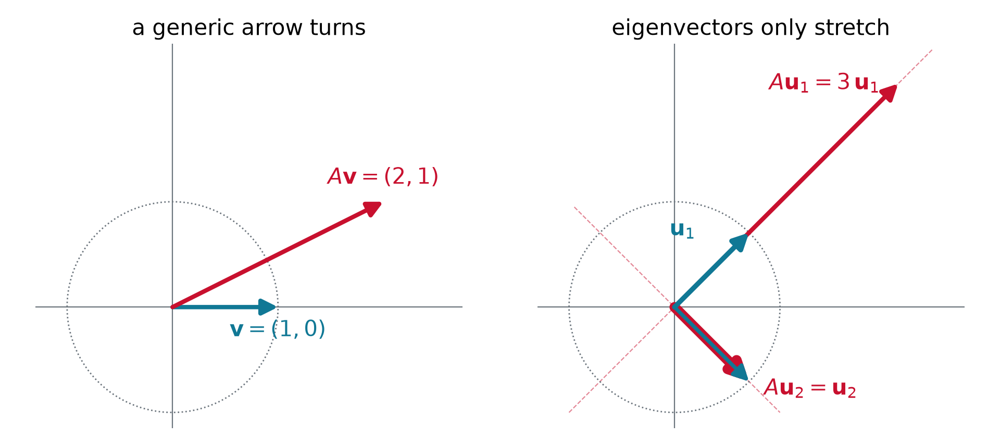
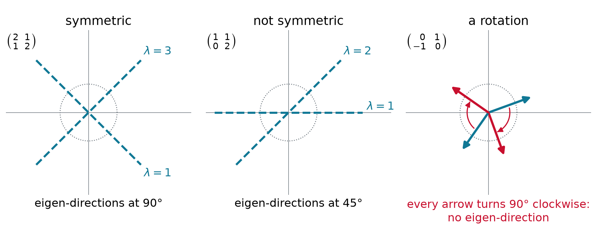
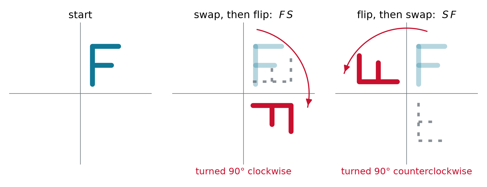
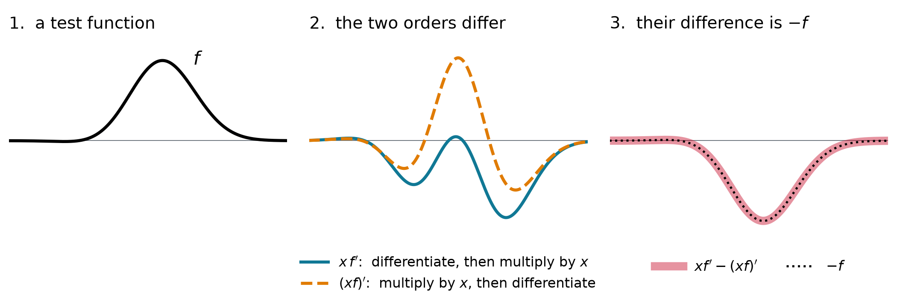

Hermitian Operators and Commutators
Chem 3240 · Lecture 3.5b
Where we are
- Last time: on a grid every operator is a matrix, and \hat{H}\psi = E\psi becomes H\mathbf{v} = E\mathbf{v}
- The eigenvalues are the values a measurement can return
- Postulate 2: every observable is a linear Hermitian operator
- Today: which matrices may stand for an observable? And what if two of them do not commute?
A matrix turns and stretches arrows

\begin{pmatrix} 2 & 1 \\ 1 & 2 \end{pmatrix}\begin{pmatrix} 1 \\ 0 \end{pmatrix} = \begin{pmatrix} 2 \\ 1 \end{pmatrix}\ \text{turned}, \qquad\qquad \begin{pmatrix} 2 & 1 \\ 1 & 2 \end{pmatrix}\begin{pmatrix} 1 \\ 1 \end{pmatrix} = 3\begin{pmatrix} 1 \\ 1 \end{pmatrix}\ \text{only stretched}
- An eigenvector keeps its direction, A\mathbf{v} = \lambda\mathbf{v}: the same shape as \hat{A}\phi = a\phi
Example: eigenvalues of a 2×2 by hand
A\mathbf{v} = \lambda\mathbf{v}\ \text{ with }\ \mathbf{v} \neq 0 \qquad\Longleftrightarrow\qquad \det(A - \lambda I) = 0
Find the eigenvalues and eigenvectors of A = \begin{pmatrix} 2 & 1 \\ 1 & 2 \end{pmatrix}.
\det\begin{pmatrix} 2-\lambda & 1 \\ 1 & 2-\lambda \end{pmatrix} = (2-\lambda)^2 - 1 = 0 \quad\Longrightarrow\quad \lambda = 3,\ 1
\lambda = 3: \mathbf{v} \propto (1, 1). \ \lambda = 1: \mathbf{v} \propto (1, -1). Check: 3 + 1 = 4 is the trace, 3 \times 1 = 3 the determinant.
Hermitian: the matrix version of a real number
| numbers | matrices and operators |
|---|---|
| conjugate z^* | adjoint A^\dagger: swap rows and columns, then conjugate |
| real: z^* = z | Hermitian: A^\dagger = A |
| imaginary: z^* = -z | anti-Hermitian: A^\dagger = -A, for example d/dx |
| z = \text{real part} + i\,\text{imaginary part} | A = \tfrac{1}{2}(A + A^\dagger) + \tfrac{1}{2}(A - A^\dagger) |
| -i \times 3i = 3 is real | -i\hbar\,d/dx is Hermitian |
| (zw)^* = z^*w^* | (AB)^\dagger = B^\dagger A^\dagger: the order reverses |
- Hermitian operators are the “real numbers” of quantum mechanics: their eigenvalues are real
Hermitian: its own mirror image
\int \phi^*\,\big(\hat{A}\psi\big)\,dx = \int \big(\hat{A}\phi\big)^*\,\psi\,dx \qquad\Longleftrightarrow\qquad A_{jk} = A_{kj}^*

- In Dirac notation \langle \phi \vert \hat{A}\psi \rangle = \langle \hat{A}\phi \vert \psi \rangle: the operator may act on either side
Example: which matrices are Hermitian?
A = \begin{pmatrix} 2 & 1-i \\ 1+i & 3 \end{pmatrix} \quad B = \begin{pmatrix} 1 & 2 \\ 3 & 4 \end{pmatrix} \quad C = \begin{pmatrix} i & 0 \\ 0 & 1 \end{pmatrix} \quad D = \begin{pmatrix} 0 & -i \\ i & 0 \end{pmatrix}
- A: A_{12} = 1-i = A_{21}^*, real diagonal: Hermitian
- B: B_{12} = 2 \neq B_{21}^* = 3: not Hermitian
- C: the diagonal must be real, and i \neq i^* = -i: not Hermitian
- D: D_{12} = -i = D_{21}^*: Hermitian, the pattern of \hat{p} on the grid
Example: real eigenvalues from the quadratic formula
Show that every Hermitian 2\times 2 matrix \begin{pmatrix} a & b \\ b^* & d \end{pmatrix}, with a and d real, has real eigenvalues.
(a - \lambda)(d - \lambda) - b\,b^* = 0 \qquad\Longrightarrow\qquad \lambda = \frac{a + d}{2} \pm \sqrt{\Big(\frac{a - d}{2}\Big)^2 + \lvert b\rvert^2}
Under the root sits a sum of squares, never negative, so \lambda is real. Matrix A above: \lambda = \tfrac{5}{2} \pm \tfrac{3}{2} = 4 and 1.
- The coupling \lvert b\rvert pushes the two levels apart: bonding and antibonding orbitals
Hermitian eigenvectors are perpendicular

- Symmetric: (1, 1)\cdot(1, -1) = 0, orthogonal eigenvectors
- Not symmetric: real eigenvalues, but the eigenvectors overlap. A rotation has none at all
Why observables are Hermitian

- Real eigenvalues: measured values are real numbers
- Orthogonal eigenvectors: different outcomes exclude each other. Turning up the “imaginary part” sK breaks both
Why the eigenvalues are real, in two lines
Let \hat{A}\phi = a\phi with \langle \phi \vert \phi \rangle = 1 and \hat{A} Hermitian. Show that a is real.
\langle \phi \vert \hat{A}\phi \rangle = \langle \phi \vert a\phi \rangle = a, \qquad\qquad \langle \hat{A}\phi \vert \phi \rangle = \langle a\phi \vert \phi \rangle = a^*
Hermitian says the two are equal, so a = a^*.
- The step that matters: a constant leaves a ket as it is, but leaves a bra conjugated
\langle a\phi \vert \psi \rangle = \int (a\phi)^*\,\psi\,dx = a^*\!\int \phi^*\,\psi\,dx = a^*\,\langle \phi \vert \psi \rangle
Example: the derivative on two points
On two grid points \dfrac{d}{dx} \to D_1 = \dfrac{1}{2h}\begin{pmatrix} 0 & 1 \\ -1 & 0 \end{pmatrix}. Find the eigenvalues of D_1 and of P = -i\hbar D_1.
\begin{aligned} \det(D_1 - \lambda I) &= \lambda^2 + \frac{1}{4h^2} = 0 &&\Rightarrow\quad \lambda = \pm\frac{i}{2h} \\ P = -i\hbar D_1 &= \frac{\hbar}{2h}\begin{pmatrix} 0 & -i \\ i & 0 \end{pmatrix} &&\Rightarrow\quad p = \pm\frac{\hbar}{2h} \end{aligned}
D_1 is the rotation of the last figure: imaginary eigenvalues. Times -i\hbar they turn real; P is \tfrac{\hbar}{2h} times matrix D above.
- d/dx is anti-Hermitian, the “imaginary” kind; -i\hbar\,d/dx is Hermitian, the “real” kind
Example: is momentum Hermitian?
Show that \hat{p} = -i\hbar\,d/dx satisfies \int \phi^*\,(\hat{p}\psi)\,dx = \int (\hat{p}\phi)^*\,\psi\,dx.
Integrate by parts. The boundary term vanishes because physical \phi, \psi go to zero:
\begin{aligned} \int\phi^*\big(-i\hbar\,\psi'\big)\,dx &= \Big[-i\hbar\,\phi^*\psi\Big]_{-\infty}^{\infty} + i\hbar\int\phi'^*\,\psi\,dx \\ &= 0 + \int\big(-i\hbar\,\phi'\big)^*\,\psi\,dx \quad\checkmark \end{aligned}
Without the i: (d/dx)^\dagger = -d/dx, anti-Hermitian. The -i turns the sign around.
- Recipe: move the derivative to the other function by parts, then check the signs and the conjugates
Order matters
- \hat{A}\hat{B}\,f means: apply \hat{B} first, then \hat{A}
- For numbers the order never matters, 3 \times 5 = 5 \times 3. For operators it often does
[\hat{A},\hat{B}] = \hat{A}\hat{B} - \hat{B}\hat{A}
- The commutator is zero exactly when the order does not matter
Can two observables be sharp at once?
- A sharp value a means an eigenfunction, \hat{A}\psi = a\psi. Sharp a and sharp b needs \hat{B}\psi = b\psi too. Then
\hat{A}\hat{B}\,\psi = \hat{A}\,(b\psi) = ab\,\psi \qquad\qquad \hat{B}\hat{A}\,\psi = \hat{B}\,(a\psi) = ba\,\psi
\big[\hat{A},\hat{B}\big]\,\psi = \big(\hat{A}\hat{B} - \hat{B}\hat{A}\big)\,\psi = 0 \quad \text{on the shared } \psi
- So two observables can be sharp together only if their commutator gives zero on that state
Order matters: flip and swap

F = \begin{pmatrix} 1 & 0 \\ 0 & -1 \end{pmatrix}, \quad S = \begin{pmatrix} 0 & 1 \\ 1 & 0 \end{pmatrix}: \qquad [F, S] = FS - SF = \begin{pmatrix} 0 & 2 \\ -2 & 0 \end{pmatrix} \neq 0
- Both Hermitian, no shared eigenvector: F keeps (1,0), (0,1); S keeps (1,\pm 1). Spin along z, x (Ch. 5)
Example: x and d/dx
Find [x, d/dx] by acting on an arbitrary test function f.
x\,\frac{df}{dx} - \frac{d}{dx}\big(xf\big) = xf' - f - xf' = -f \qquad\Longrightarrow\qquad \left[x,\frac{d}{dx}\right] = -1
Multiply by -i\hbar: [\hat{x},\hat{p}] = i\hbar. The product rule leaves one term, for every f.
- Recipe: act on a test function f, use the product rule, then drop f
Picture it: the two orders differ by f

\left[x,\frac{d}{dx}\right] = -1 \qquad\xrightarrow{\ \times\,(-i\hbar)\ }\qquad [\hat{x},\hat{p}] = i\hbar
Example: XP - PX on three points
Three grid points spaced h apart: X = \operatorname{diag}(x_1, x_2, x_3), and P = -i\hbar D_1 has P_{j,j\pm 1} = \mp\dfrac{i\hbar}{2h}. Find XP - PX.
Entry by entry, (XP - PX)_{jk} = (x_j - x_k)\,P_{jk} with x_j - x_{j\pm 1} = \mp h:
XP - PX = \frac{i\hbar}{2}\begin{pmatrix} 0 & 1 & 0 \\ 1 & 0 & 1 \\ 0 & 1 & 0 \end{pmatrix} \qquad \text{averages the neighbors: } \approx i\hbar\,\psi
Its trace is 0, not 3i\hbar: no finite grid gives exactly i\hbar I.
Example: momentum and energy of a free particle
For a free particle \hat{H} = \hat{p}^2/2m. Is e^{ikx} an eigenfunction of \hat{p}? Of \hat{H}?
\begin{aligned} \hat{p}\,e^{ikx} &= -i\hbar\,(ik)\,e^{ikx} = \hbar k\,e^{ikx} \\ \hat{H}\,e^{ikx} &= \frac{1}{2m}\,\hat{p}\,\big(\hbar k\,e^{ikx}\big) = \frac{\hbar^2k^2}{2m}\,e^{ikx} \end{aligned}
Yes, both: this state has a sharp momentum and a sharp energy.
- The two operators commute: \hat{H}\hat{p} = \hat{p}^3/2m = \hat{p}\hat{H}
Commuting operators share eigenfunctions
[\hat{A},\hat{B}] = 0 \quad\Longrightarrow\quad \hat{A}\phi_n = a_n\phi_n, \quad \hat{B}\phi_n = b_n\phi_n
Why, in three steps (if no other function has the same a):
- Start from \hat{A}\phi = a\phi
- Swap the order, allowed because they commute: \hat{A}\big(\hat{B}\phi\big) = \hat{B}\big(\hat{A}\phi\big) = a\,\big(\hat{B}\phi\big)
- So \hat{B}\phi also has the value a: it can only be \phi times a number, \hat{B}\phi = b\,\phi
- [\hat{x},\hat{p}]\,\psi = i\hbar\,\psi \neq 0 for every \psi: no shared eigenfunctions, so no state has a sharp x and a sharp p (uncertainty, next lecture)
Takeaway
Observables are Hermitian operators, the matrix version of real numbers: equal to their own conjugate transpose, with real eigenvalues and orthogonal eigenvectors. Two observables can be sharp together only when their operators commute, and [\hat{x},\hat{p}] = i\hbar says position and momentum never are.
Chem 3240 · Quantum Mechanics